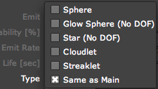

Aux System tab
The Aux System is a particle system within the main particle system, thus the name Aux or 'Auxiliary' System. Aux particles are emitted from the main particles system either continuously or when the main particles collide. The Aux System is useful for creating effects like particle trails, particle traces and organic lines.
Read about the three Aux System groups and an 'Emitting Particles from Particles' tutorial on the Aux System group page.
The Aux System tab.
Emit pop-up
Emit turns on the Aux particle system.
There are three Emit options:
• Off: By default, this option is set to Off, which means the Aux particle are not active.
• At Bounce Event: Tells the Aux particles to be emitted at a collision event.
• Continuously: Tells the Aux particles to be emitted continuously.
| Aux Off | Aux On> Continuously |
Emit Probability [%]
Emit Probability sets how many of the main particles actually produce Aux particles. Probability is measured in percentage. Low values produce fewer particles. Higher values produce more particles.
Left to right, Emit Probability is low and high.
Particle Emit Rate
Sets the rate of Aux particle emission. Low values create a low emission of Aux particles. Higher values create more emission and thus more Aux particles.
Particles are measured in seconds when Emit> Continuously is chosen. Particles are measured by collision when Emit> At Bounce Event is chosen.
Left to right, Particles Emit Rate is low and high. Emit pop-up is set to Continuously.
Life
Life controls the lifespan of the Aux particles, or how long they live on screen. Low values give the particles a shorter lifespan. High values give the particles a longer lifespan. Has a related Life Randomness parameter in the Aux> Randomness group.
Velocity
Sets the initial velocity of the Aux particles at birth. Low values make the particles start slower. High values make the particles start faster. This control is sometimes referred to as 'Initial Velocity' in Trapcode Particular documentation.
Type
The Type controls sets the Particle Type used by the Aux System. These are the same choices as the main particles, except that custom particles are not available, which excludes using Sprites or Textured Polygons. See the Particle Types page for an explanation of particles.
The Same as Main option is active by default. This tells the Aux System to use the same Particle Type that the main particle system is using. This option is often helpful in keeping a consistent look to your composition. The main particle type is set in the Particle tab> Particle Type pop-up.
Technical Note: There is a limitation on Aux particles. Aux particles do NOT behave like full Textured Polygons if the main Particle Type is set to Textured Polygon. The Aux particles do take on the the polygon characteristic of orbiting around the composition camera. However, their rotation is limited since there is only a Rotate Speed control for the Z axis.

Aux System Type options
At left, main particle is Textured Polygon, Aux particle is Same as Main.
In middle, main particle is Textured Polygon, Aux particle is Star.
At right,
main particle is Star, Aux particle is Same as Main.
Color From Main [%]
Enables Aux particles to inherit the color from the main particle that created them. Measured in percentage. High values inherit a lot of main particle color. Low values take on less main particle color.
The main particle color is set by the Particle tab's Color and Set Color controls.
At left, Color From Main set low, and the Aux particles take on the default Color over Life Gradient. At right, Color From Main set high, and the Aux particles take on the red color of the main particles.
Gravity
Gravity makes the Aux particles fall downwards in a natural way. The particles pick up speed as they fall, just like any object in real world would. Low values make the Aux particles fall slowly. High values make the Aux particles fall more quickly.
Transfer Mode
The Transfer Mode controls how Aux particles are composited together. See a similar example on the Particle tab> Glow group page for more information.
There are three Transfer Mode options for the Aux System.
Normal |
The normal composite mode simply applies the glow area over top of the particle. This is the default mode. |
|
Add |
In this mode the glow is added on top of the particles causing a much brighter result. This mode is useful for creating the appearance of sparks or fire flies. Set the Opacity lower to control the brightness of the glow. |
|
Screen |
In this mode the screen compositing mode is used to composite the glow on top of the glow sphere or star. The screen mode brightens the glow effect but will not create a burnt out appearance as seen in the add mode. |
Rotate Speed
Controls how fast the Aux particles rotate. High values make the particles rotate quickly. Low values make the particles rotate slowly.
Unlike the Rotation group for main particles, this single Rotation value controls rotation only around the Z axis. When keyframing this parameter, all Aux particles born at a certain frame will get the current Rotation Speed.
Feather
This control sets the softness of the Aux particles. High values give a feathery soft edge to the particle. Lower values give a more globular, solid edge. See a similar example on the Particle tab> Glow group page.